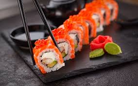
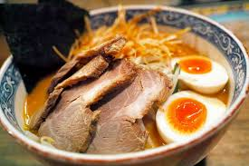
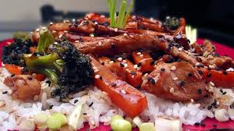

Best Japaneese Food in Seattle by District
Sushi

-
Village Sushi - 211 University Way NE, Seattle, WA 98105
-
Big Tuna - 4336 Roosevelt Way NE b, Seattle, WA 98105
Raman

-
Samurai Noodle - 4138 University Way NE, Seattle, WA 98105
-
U:Don Fresh Japaneese Noodles - 4515 University Way NE, Seattle, WA 98105
Teriyaki

-
Nasai Teriyaki -4515 University Way NE, Seattle, WA 98105